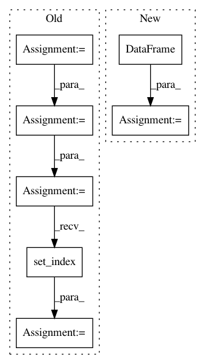

5aaa63d7ecf85d341fec9b758d17f2bf4cde6042,src/pudl/transform/ferc1.py,FERCPlantClassifier,predict,#FERCPlantClassifier#Any#Any#,1292
Before Change
new_grp = self._best_of.loc[b_m, "record_id"]
// reshape into row, rather than column,
new_grp = new_grp.values.reshape(1, len(self._years))
// Stack the new list of record_ids on our output DataFrame:
new_grp = pd.DataFrame(new_grp, columns=self._years)
out_df = pd.concat([out_df, new_grp])
// Save the seed record_id for use in indexing the output:
out_idx = out_idx + [self._best_of.loc[idx, "record_id"]]
out_df["seed_id"] = out_idx
out_df = out_df.set_index("seed_id")
out_df = out_df.fillna("")
return out_df
def score(self, X, y=None): // noqa: N803
Scores a collection of FERC plant categorizations.
After Change
new_grp = tmp_best.loc[b_m, "record_id"]
// Stack the new list of record_ids on our output DataFrame:
out_df = out_df.append(
pd.DataFrame(
data=new_grp.values.reshape(1, len(self._years)),
index=pd.Index(
[tmp_best.loc[idx, "record_id"]],
name="seed_id"),
columns=self._years))
return out_df
def score(self, X, y=None): // noqa: N803
Scores a collection of FERC plant categorizations.
In pattern: SUPERPATTERN
Frequency: 3
Non-data size: 7
Instances
Project Name: catalyst-cooperative/pudl
Commit Name: 5aaa63d7ecf85d341fec9b758d17f2bf4cde6042
Time: 2020-03-11
Author: zane.selvans@catalyst.coop
File Name: src/pudl/transform/ferc1.py
Class Name: FERCPlantClassifier
Method Name: predict
Project Name: stellargraph/stellargraph
Commit Name: 3db0f69797d05b8090e4f1c72e9428991e3f2ff0
Time: 2020-03-04
Author: Huon.Wilson@data61.csiro.au
File Name: tests/mapper/test_directed_node_generator.py
Class Name:
Method Name: create_simple_graph
Project Name: J535D165/recordlinkage
Commit Name: 4a24e4e36ee175aef54b92eb03e08a2be7811a96
Time: 2018-03-10
Author: jonathandebruinhome@gmail.com
File Name: recordlinkage/datasets/febrl.py
Class Name:
Method Name: _febrl_links